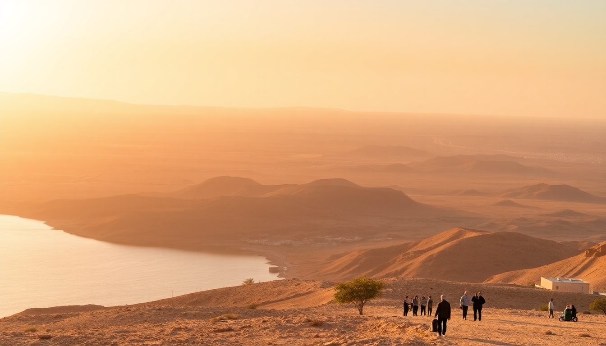

Best Day Trips from Hurghada: Luxor, Islands & Desert Safaris

I spent two weeks based in Hurghada last spring, and the biggest surprise was how much lay within a day’s reach. The Red Sea coast is your home base, but the real variety comes from leaving it. Here’s what I learned about the three best day trips — Luxor’s temples, Giftun Islands’ water, and the Eastern Desert’s dunes — including what’s worth your money and what’s better skipped.
Why base yourself in Hurghada for day trips?
Hurghada works as a launchpad because it has the infrastructure — a decent airport, reliable tour operators, and hotels that don’t mind early check-out breakfasts. Most trips leave around 5–6 AM and return by 8–9 PM. The trade-off is that you’re spending 3–4 hours driving each way to Luxor, but the Red Sea hotels are generally cheaper than Luxor’s, and the beach recovery the next day is real. I stayed at Steigenberger Al Dau Beach Hotel near the old town — clean, good breakfast buffet, and they packed me a to-go box for the Luxor drive without me asking.
What’s the best way to visit Luxor in one day from Hurghada?
The short answer: a private driver or a small-group guided tour. I went with a private car arranged through my hotel — cost about $120 total for two people, including pickup at 5 AM and drop-off at 8 PM. The drive is straight west on the desert highway, about 3.5 hours each way. Don’t take the bus tours that stop at every papyrus shop; you’ll lose an hour to sales pitches.
Once in Luxor, hit these in order:
- Valley of the Kings — go early (open 6 AM). The tombs of Ramses VI and Seti I are the most impressive. Skip the generic “three-tomb” ticket; pay extra for the special tombs.
- Colossi of Memnon — free, roadside, five-minute photo stop. Worth it for scale.
- Temple of Hatshepsut — the architecture is unique, but the sun is brutal by 10 AM. Bring water.
- Karnak Temple — save for last. It’s massive, shaded in parts, and the hypostyle hall is genuinely overwhelming.
Lunch tip: eat at Sofra Restaurant & Cafe near the Luxor Temple. The koshari and grilled chicken were the best I had in Egypt, and they didn’t tack on a tourist markup. Avoid the buffet-style tourist restaurants near the Valley of the Kings — overpriced and bland.
Are the Giftun Islands worth the hype?
Yes, but only if you pick the right tour. The Giftun Islands are a protected marine area about 45 minutes by boat from Hurghada’s marina. The water is absurdly clear — visibility at 15–20 meters is normal. I booked a speedboat trip through GetYourGuide (the one with snorkeling stops at two different reefs) and it was the most efficient day of my trip.
What to look for in a tour:
- Small boat (max 12 people) — big catamarans feel like a floating mall.
- Two snorkeling stops — one at Giftun Island Beach (shallow, good for beginners) and one at Orange Bay (deeper, more coral variety).
- Lunch included — most serve basic fish or chicken with rice. It’s fine.
- No “sea trip” with 30 minutes on the island — some tours rush you. You want at least 2 hours total in the water.
The coral near Orange Bay is still recovering from bleaching, but I saw parrotfish, triggerfish, and a sea turtle on my second stop. Bring reef-safe sunscreen — the local shops sell it, but it’s cheaper to bring your own. Also, the island itself is just sand and a few cabanas — don’t expect loungers or service. It’s a swimming stop, not a resort.
What should I expect from a desert safari from Hurghada?
The Eastern Desert is not the Sahara — it’s rocky, hilly, and surprisingly green after rain. Most safaris run in the afternoon and end with sunset. I did a half-day jeep tour with Bedouin Safari Hurghada (local operator, not a chain) and it was the most authentic experience of the three trips.
Typical itinerary:
- Quad bike ride through wadis (dry riverbeds) — about 45 minutes. Dusty but fun.
- Bedouin village visit — some are tourist setups, but the one near Wadi Gemal felt real. They served sweet tea and flatbread cooked on coals.
- Sunset viewpoint — we stopped at a ridge overlooking the Red Sea. No other tourists around.
- Stargazing — if you do the evening tour, the night sky is incredible. No light pollution.
What to skip: the “super safari” packages that include a barbecue dinner and belly dancing show. The food is mediocre and the show feels forced. Stick to a simple jeep or quad-bike tour with a genuine Bedouin stop. I paid about $50 per person for the half-day, including pickup and tea.
When is the best time of year for these day trips?
October through April is ideal. Summer (June–August) is brutal — Luxor hits 45°C (113°F) by noon, and the desert sand burns through shoes. I went in late March and it was perfect: 25°C in Hurghada, 30°C in Luxor, and the water was warm enough for snorkeling without a wetsuit.
If you go in winter (December–February), bring a jacket for the morning desert drives. The jeep ride at 6 AM was genuinely cold — I wore a fleece. Summer trips are possible if you start at 4 AM and finish by 11 AM, but I wouldn’t recommend Luxor in July.
FAQ
Is it safe to drive from Hurghada to Luxor alone? I wouldn’t recommend it. The road is well-paved and has military checkpoints every 30 kilometers, but the driving style is chaotic — no lane discipline, sudden braking, and occasional livestock. A hired driver or organized tour handles the stress. I felt safe the whole time, but I was glad not to be behind the wheel.
Can I visit the Giftun Islands without a tour? Technically yes — you can hire a private boat from the marina for about $150–200 — but it’s not worth it. Tours handle the permits (required for the protected area), provide snorkel gear, and include lunch. Solo boats often can’t access the best reefs. I saw a couple who tried it and ended up stuck near the shore because their captain didn’t know the good spots.
What should I pack for a combined Luxor and desert trip? Sun protection is non-negotiable: a wide-brim hat, sunglasses, SPF 50, and a light long-sleeve shirt. For Luxor, bring a reusable water bottle — refill stations are rare, but your driver will have cold water. For the desert, closed-toe shoes (sandals get filled with sand) and a scarf for dust. Don’t bother with a fancy camera — your phone in a waterproof case does the job for snorkeling.
Conclusion
- Luxor is the most rewarding day trip if you can handle the early start and long drive. Hire a private car and skip the papyrus shops.
- Giftun Islands are worth it for the snorkeling, but pick a small-group speedboat tour over the big catamarans.
- Desert safaris are best in the late afternoon — skip the dinner shows and focus on the quad biking and Bedouin tea.
- Timing matters — October to April is comfortable; summer is punishing.
- Book through your hotel or a local operator — the big online platforms are fine, but local guys often give better service and don’t rush you.